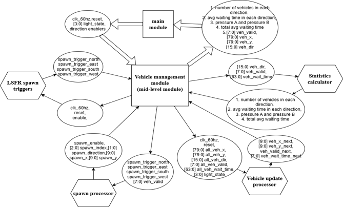
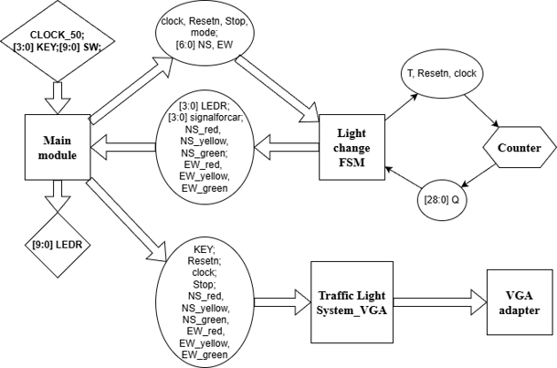
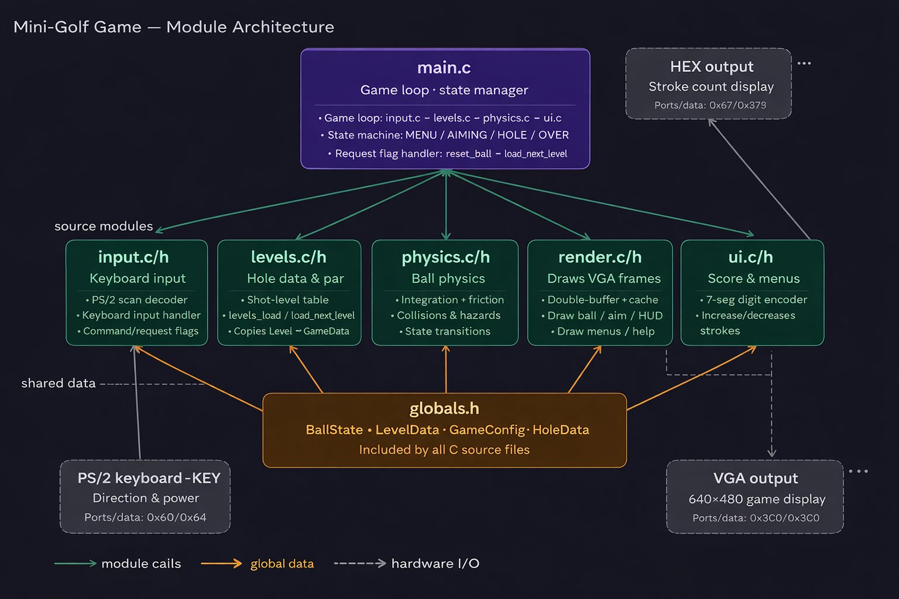
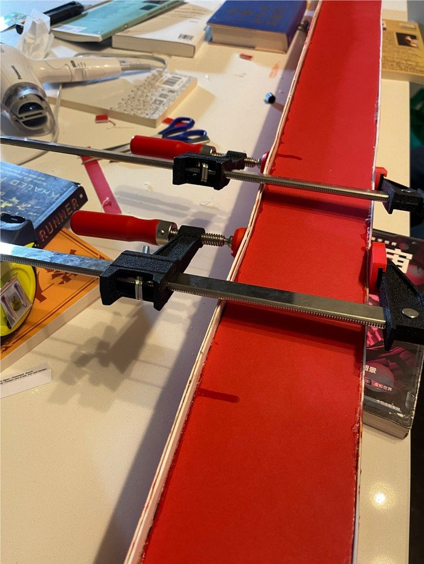

Intersection Traffic Simulator on FPGA
A four-way intersection simulated entirely in Verilog on a DE1-SoC, with traffic lights, randomly arriving vehicles and live queue statistics drawn over VGA at 60 Hz.
What I did: the vehicle subsystem
- Designed the full vehicle management module: spawning, slot allocation, motion and statistics.
- Instantiated 8 parameterized update processors in parallel, each enforcing red-light stops and a 10-pixel following gap so cars queue realistically.
- Generated random arrivals in 4 directions with 16-bit maximal-length LFSRs; a spawn processor arbitrates by fixed priority and takes the first free slot.
- Computed per-direction traffic “pressure” (queue length × average wait) in combinational logic every frame.
- Debugged coordinate wrap-around from 10-bit unsigned underflow, and restructured submodules so a single module owns every array write.


Two-person project with Helen N. (traffic-light FSM, counters, road & light VGA).
Mini-Golf Game on DE1-SoC
A three-level top-down mini-golf game on a Nios V (RISC-V) soft processor: PS/2 keyboard aiming, 2D ball physics, water hazards, and a 640×480 VGA display with HUD and HEX-display scoring.
What I did: rendering & display
- Built a double-buffered, vsync-locked renderer that erases only changed regions from a cached static background instead of redrawing the full screen.
- Tracked dirty regions separately for each frame buffer to prevent ghosting, restoring pixels from a cached background.
- Drew all graphics with no external libraries: Bresenham lines, midpoint-circle fill, and a custom 59-glyph 5×7 bitmap font for menus and HUD.
- Defined the shared game-state interface (globals.h): game FSM, geometry structs and command flags, so rendering, physics, input and levels could be developed in parallel.
- Implemented the HEX-display logic and integrated render/UI sequencing in the main loop.

Two-person project with Karan K. (physics, collisions, input, levels), split 50/50.
Box-Girder Matboard Bridge
Designed, analysed and built a 1.2 m matboard box-girder bridge to carry a moving train load, iterating the cross-section against a MATLAB factor-of-safety model.
What I did
- Led a team of three through six design iterations, binary-searching key cross-section dimensions against a MATLAB factor-of-safety model to reach the ~1,000 N train-load target.
- Evaluated flexural tension/compression, thin-plate and shear buckling, and glue shear to drive design changes: 400 mm diaphragm spacing, double-layer top flange, splices at low-moment ends.
- Built and load-tested the bridge, then traced the gap between prediction and test to construction imperfections.
MATLAB analysis code omitted from the report; available on request.

Team project with Ethan L. and Amy L.